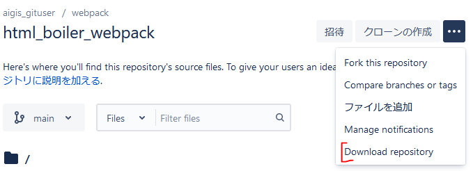
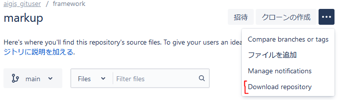
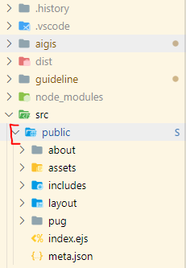
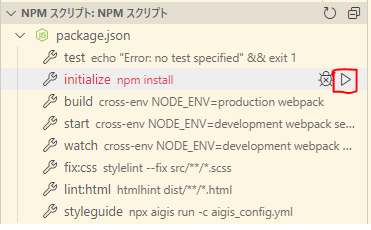
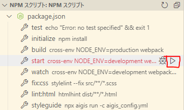
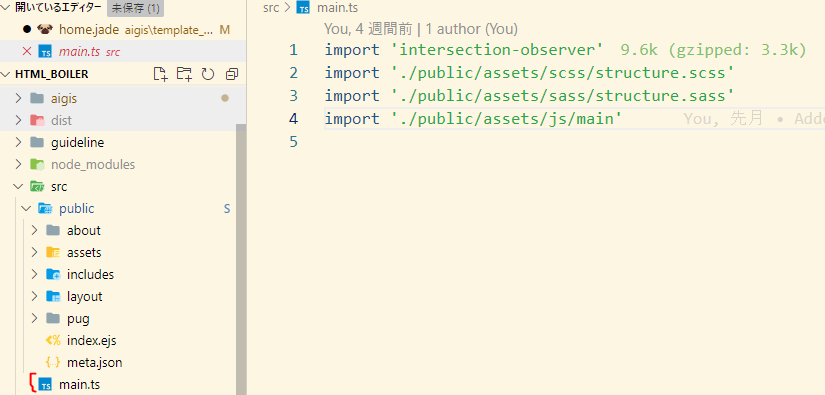

はじめに
当ガイドラインはプロジェクトの
ディレクトリ構造、
CSSモジュールの粒度や
命名規則を統一することで、
HTML/CSS の品質を
均一化する事を目的とする。
詳しくはレギュレーションページを参照。
プロジェクトの初回設定
- 開発環境
-
https://bitbucket.org/aigis_gituser/html_boiler_webpack/src/main/
- コーディングテンプレート
-
https://bitbucket.org/aigis_gituser/markup/src/main/
- 開発環境の src/public/ に配置する。
- 
初期化(必須パッケージのインストール)
Visual Studio Codeの場合サイドパネルから実行可能

それ以外のエディタを使用する場合
コマンドプロンプト、パワーシェル、などのターミナルで
npm i
もしくは
yarn install
この手順は次回からは不要
プロジェクトの起動
Visual Studio Codeの場合サイドパネルから実行可能

それ以外のエディタを使用する場合
コマンドプロンプト、パワーシェル、などのターミナルで
npm start
もしくは
yarn start
プロジェクトの終了
ターミナルを閉じるか、
- Ctrl + C(Win)
- Cmd + C(Mac)
画面にしたがって終了
開発環境について
対応テンプレートエンジン
対応CSSプリプロセッサ
アセットの読み込み

不要なファイルの読み込みは削除する。
サイトマップ